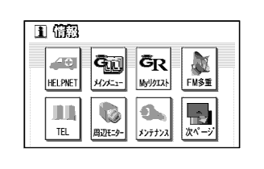
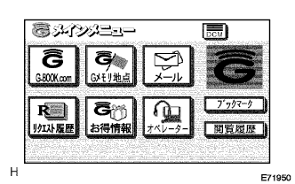
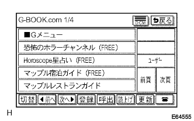
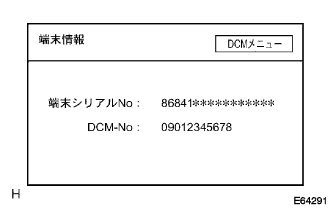
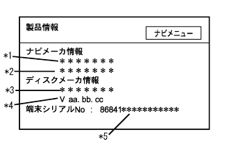

)参照。
)参照。G-BOOKシステム 機能点検 |
|  |
メインメニューからG-BOOKを起動させる。
|  |
“G-BOOK.com”を押す。
|  |
“接続中”の表示の後、G-BOOK.comが表示されることを確認する。
)参照。|  |
端末情報(テレマティクストランシーバ装着車)
ダイアグノーシスを起動させる。(要領は参照)
“検査メニュー”を選択する。
“ナビ検査”を選択する。
“DCM検査”を選択する。
“端末情報”を選択する。
G-BOOK端末情報内容を確認する。
| 表示 | 意味 |
|---|---|
| 端末シリアルNo. | ナビゲーションコンピュータの保有するG-BOOK端末シリアルNo.を読み出して表示する(G-BOOK端末ID) |
| DCM No. | データ通信モジュールの電話番号11桁の表示を行う(通信装置ID) |
|  |
製品情報(テレマティクストランシーバ非装着車)
ダイアグノーシスを起動させる。(要領は参照)
“検査メニュー”を選択する。
“ナビ検査”を選択する。
“製品情報”を選択する。
製品情報の端末シリアルNo.を確認する。
| 表示 | 内容 |
|---|---|
| 端末シリアルNo.(*5) | ナビゲーションコンピュータの保有するG-BOOK端末シリアルNo.を読み出して表示する(G-BOOK端末ID) |
ダイアグノーシスコード確認(サービス検査)(要領は参照)
ダイアグノーシスコード確認(AVC-LAN plus検査)(要領は参照)
通信モジュール検査(要領は参照)
接続確認(要領は参照)
G-BOOKサポートセンター問合せ確認シート記入
各項目を記入し、G-BOOKサポートセンターへFAXを送付する。
| 項番 | 項目名 | 記入要領 | 備考 |
|---|---|---|---|
| 1 | 販売店名 | 変更依頼者の販売店名を記入 | 依頼者情報 |
| 2 | 営業所名 | 変更依頼者の営業所名を記入 | 依頼者情報 |
| 3 | 販売店担当 | 変更依頼者名を記入 | 依頼者情報 |
| 4 | 営業所Tel | 変更依頼者の営業所の電話番号を記入 | 依頼者情報 |
| 5 | 車名 | 該当車両の車名を記入 | 依頼対象車両情報 |
| 6 | G-BOOK端末標準·オプション | 該当車両のG-BOOK端末が標準装着かオプションか販売店装着オプションかを記入 | 依頼対象車両情報 |
| 7 | お客様名 | お客様の名前を記入 | 依頼対象車両情報 |
| 8 | GAZOO·ID | お客様のGAZOO·IDを記入 | 依頼対象車両情報 |
| 9 | 車両明細-型式 | 該当車両の型式を記入 | 依頼対象車両情報 |
| 10 | 車両明細-フレームNo. | 該当車両のフレーム番号を記入 | 依頼対象車両情報 |
| 11 | 車両明細-登録No. | 該当車両の登録ナンバーを記入 | 依頼対象車両情報 |
| 12 | 車両明細-走行距離 | 該当車両の走行距離を記入 | 依頼対象車両情報 |
| 13 | 車両明細-登録日 | 該当車両の登録日を記入 | 依頼対象車両情報 |
| 14 | 車両明細-故障受け付け日 | 該当車両の入庫日を記入 | 依頼対象車両情報 |
| 15 | センターサーバーとの通信不良 | 通信不良発生時にレ点を打つ | 販売店からの不具合情報 |
| 16 | 発生頻度 | 通信不良の発生頻度を記入する | 販売店からの不具合情報 |
| 17 | エラー表示 | 通信不良時のエラー表示の有無およびエラー表示内容を記入する | 販売店からの不具合情報 |
| 18 | 発生日時 | 通信不良の発生日時を記入する | 販売店からの不具合情報 |
| 19 | 発生住所 | 通信不良の発生住所を記入する | 販売店からの不具合情報 |
| 20 | 車両状況 | 通信不良発生時の車両状況にレ点を打つ | 販売店からの不具合情報 |
| 21 | 発生場所 | 通信不良の発生場所にレ点を打つ | 販売店からの不具合情報 |
| 22 | 通信機器/状況-通信機器 | 使用している装着機器にレ点を打つ (テレマティクストランシーバ装着車···DCM テレマティクストランシーバ非装着車···携帯電話) | 販売店からの不具合情報 |
| 23 | 通信機器/状況-ＤＣＭ/状況 | 通信不良発生時のDCM圏内·圏外表示にレ点を打つ(メインメニューに表示)(テレマティクストランシーバ装着車) | 販売店からの不具合情報 |
| 24 | 通信機器/状況-携帯単体使用 | 携帯電話単体で使用可能かどうかにレ点を打つ | 販売店からの不具合情報 |
| 25 | 通信機器/状況-携帯電話/状況 | 通信不良発生時の携帯電話の圏内·圏外表示にレ点を打つ | 販売店からの不具合情報 |
| 26 | 通信機器/状況-携帯電話会社 | 携帯電話会社にレ点を打つ | 販売店からの不具合情報 |
| 27 | 通信機器/状況-電池残量 | 携帯電話の電池残量にレ点を打つ | 販売店からの不具合情報 |
| 28 | 通信機器/状況-機種名 | 携帯電話の機種名を記入する | 販売店からの不具合情報 |
| 29 | 販売店診断-現象の再現性 | 現象の再現性にレ点を打つ | 販売店からの不具合情報 |
| 30 | 販売店診断-ダイアグコード | ダイアグコード出力の有無およびダイアグコード内容を記入する(要領は、参照) | 販売店からの不具合情報 |
| 31 | 販売店診断-通信モジュール接続 | 通信モジュール検査の結果を記入する(要領は参照) | 販売店からの不具合情報 |